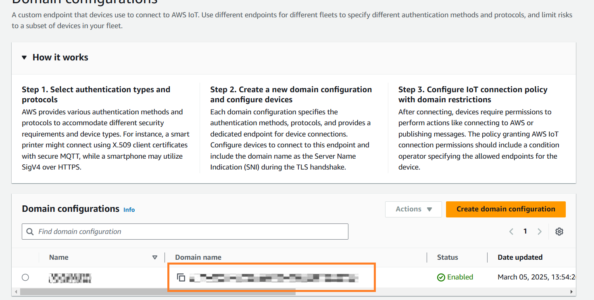

Connecting to popular MQTT-brokers
In this section, the steps taken to establish a connection and publish data to Azure and AWS are portrayed. These steps and hints presented here would be analogous with brokers from other vendors but these were taken as illustration due to their extensive use in the industry.
Connecting to Azure Event Grid
To connect with Azure, add the broker as described in Setting up a generic MQTT broker as a synchronization destination.
Note the following hints when configuring the authentication to an Azure Event Grid broker:
-
Authentication using Thumbprint Match (Client certificate and thumbprint)
To use this authentication method, proceed as follows:-
To create the thumbprint and create an Event Grid Namespace, proceed as follows:
More information is available under Publish and subscribe to MQTT messages on Event Grid Namespace with Azure portal.- Generate thumbprint.
- Create a namespace.
- Create clients.
- Create topic spaces.
- Configuring access control using permission bindings.
-
In IIH Essentials, choose "SSL/TLS/MQTTS" as the MQTT protocol and "User credentials with client certificate" as the authentication method.
- Fill in the username with the username chosen when you created the client above.
- Fill in the password with a dummy value, e.g.,
dummypassword. - Upload the client certificate and client key created when generating the thumbprint above, as well as the CA certificate.
- Save the data destination.
-
-
Authentication using Client Certificate signed by CA (Client certificate using CA certificate chain)
For this authentication, client certificates and the parent certificate (CA Certificate) are needed. To use this authentication method, proceed as follows:-
To set up the Event Grid, proceed as follows:
- Create a namespace in "Event Grid".
- Enable alternative client authentication name sources and choose "Certificate Subject Name, Certificate DNS" in the "X.509" certificate section in the Event Grid's configuration.
- Upload the CA certificate to the Event Grid's namespace.
- Add a client (or use existing one) and configure its authentication settings in the Event Grid as follows:
- Create topic spaces.
- Configure access control using permission bindings.
-
In IIH Essentials, choose "SSL/TLS/MQTTS" as the MQTT protocol and "Client certificate" as the authentication method.
- Upload the client certificate, client key and CA certificate.
- Save the data destination.
-
Connecting to AWS IoT Core
To connect to AWS IoT Core using MQTT, add the broker as described in Setting up a generic MQTT broker as a synchronization destination.
The hints listed here refer to a sample data synchronization using the "Authentication with Client Certificates" in AWS IoT Core.
-
To set up AWS IoT Core for MQTT, proceed as follows:
-
Create a Thing (device) under "AWS IoT -> Manage -> Things -> Create Things"
- Provide a name for the device.
- If no client certificates have been created, configure the certificate using "Auto-generate a new certificate".
- Use default policies.
- Download the client certificate, private key file and CA certificate 1 (RSA 2048 bit).
- Provide a name for the device.
-
Get the device endpoint under "IoT Core -> Settings". The "Domain Name" is needed for adding the broker in IIH Essentials.

-
-
In IIH Essentials, write a name for the broker.
- Choose "SSL/TLS/MQTTS" as the MQTT protocol.
- Copy the "Domain Name" from above as the MQTT host and enter
8883as the MQTT port.
- Choose "Client certificate" as the authentication method.
- Upload the client certificate, client key and CA certificate. Rename the format of the files if needed.
- Fill in the other required fields.
- Save the data destination.
Troubleshooting
Info
The circumstances described here may also apply to brokers from other vendors.
-
Issue: After configuring the broker, the status message "No connection to the Generic MQTT Broker" is shown.
Solution: To remove sources of uncertainty, delete, if possible, any synchronizations started for attributes, assets or aspects. If the connection fails only after the synchronization of an element has been started, check the next question in this section. If the connection cannot be established to the broker even if no synchronization of an element to this broker has been started, the issue might be related to the configuration of the broker parameters or authentication. A wrong configuration of the following parameters will not allow a successful connection to the broker:-
MQTT Protocol
This defines the protocol to be used when establishing the broker connection. Check that the right protocol is chosen for establishing the connection. More information can be found in Setting up a generic MQTT broker as a synchronization destination. -
MQTT Host
Write the host name without any protocol, colon or port number. The protocol, colon and port number will be added internally. For instance, to synchronize data to:ssl://b-1234a5b6-78cd-901e-2fgh-3i45j6k178l9-1.mq.us-east-2.amazonaws.com:61617, the following values should be chosen:- MQTT Protocol:
SSL/TLS/MQTTS - MQTT Host:
b-1234a5b6-78cd-901e-2fgh-3i45j6k178l9-1.mq.us-east-2.amazonaws.com - MQTT Port:
61617
- MQTT Protocol:
-
MQTT Port
Make sure to only write the port number here, without any colon or slash. Open this port in the proxy settings of the Industrial Edge Device or firewall to allow communication to the MQTT broker. - MQTT Authentication Method
If the wrong credentials or certificates are uploaded to IIH Essentials a connection will not be established to the broker. Please make sure that the correct credentials and/or certificates are used, in case they are needed.
-
-
Issue: The connection to the broker was successfully established but it disconnected as soon as the synchronization for an attribute, asset or aspect was started.

Solution: If the connection fails after the synchronization of an element has been started, it means that the issue is related to the outgoing data rather than to the authentication or MQTT protocol.
In this case it, double-check if the broker has any specific requirements or limitations for receiving payloads. The following parameters could terminate the connection, if not configured as allowed by the broker:- Retained flag
Some brokers might not allow sent messages to be retained. Make sure that the broker allows for receiving messages with a retained flag before activating it. - Maximum MQTT packages per second
The broker might limit the amount of packages that can be received within a second to avoid a system overload. Check this value before configuring the synchronization. - Maximum MQTT package size
If not correctly configured, IIH Essentials might create MQTT packages larger than those allowed by the broker. If a smaller package size is chosen, data is not thrown away but split into smaller packages. - QoS (Quality of service)
Check if the chosen QoS when configuring the data destination is allowed in the MQTT broker. - Message publishing interval
The broker might limit the frequency at which packages can be published to avoid a system overload. Check this value before configuring the synchronization.
- Retained flag
-
Issue: The connection to the broker was successfully established, it remains connected when the synchronization for an attribute, asset or aspect has been started but cannot see any incoming data in the MQTT broker.
Solution: If no error is being shown but still no data is being received in the broker, check the following:- Hierarchy has at least one attribute
To start receiving data, at least one attribute must be included as part of the hierarchy to be synchronized. Assets and aspects cannot hold data on their own, they can hold attributes where the data can be stored. -
Attribute has data
After making sure that the hierarchy contains at least one attribute, check if the attribute has already been mapped to receive and store data.-
If the aim is synchronizing new incoming data, make sure that the attribute is receiving data, this can be for instance checked in the IIH Essentials UI with the value tab:
Live value of an attribute -
If the aim is synchronizing historic data only, also make sure that the data of the attribute has a time stamp later than the start time of the synchronization. As an illustration, if an attribute has data from
2025-01-01 at 13:52:20.000until2025-01-22 at 01:01:30.000, and the start date for the synchronization is2025-01-22 at 11:03:34.000or any time in the future, no data will be sent out to the broker because the start date of the synchronization is outside of the range where the attribute has data.
-
-
Topic in configuration file is correct
Make sure that the topic is configured as expected. If the path or attribute name has spaces, these will be removed from the topic. See Creating a configuration file for more details on how to define the topic in the configuration file. For troubleshooting, a simple topic can be configured in the configuration file to remove sources of uncertainty and check if data arrives to the test topic, for instance:"topic": "testTopic".
- Hierarchy has at least one attribute